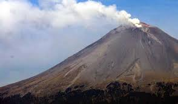
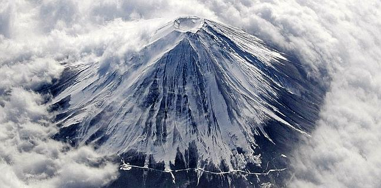
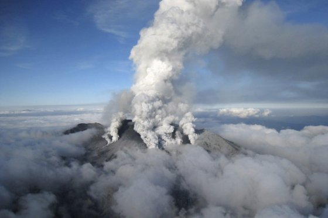
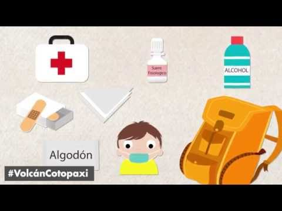

Volcane Popocatepètl
Popocatépetl
El Popocatépetl es un volcán activo localizado en el centro de México, en los límites territoriales de los estados de Morelos, Puebla y México.
El Popocatépetl es un volcán activo localizado en el centro de México, en los límites territoriales de los estados de Morelos, Puebla y México.
Su altura es de 5500 msnm, es de forma cónica, tiene un diámetrode 25 km en su base y la cima es el corte elíptico de un cono y tiene una orientación noreste-suroeste. La distancia entre las paredes de su cráter varía entre los 660 y los 840 m.
tiene una entiguedad aproximada de 730 000 años
El Centro Nacional de Prevención de Desastres (Cenapred) informó que en las últimas 24 horas el sistema de monitoreo del volcán Popocatépetl registró 40
El Popocatépetl es un volcán activo localizado en México, en los estados de Morelos, Puebla y México. La ubicación exacta del volcán es 19.02 N, 98.62 W, esto es a 70 km al sureste de la ciudad de México
El Popocatépetl es conocido por sus alta actividad volcánica, que se presenta comúnmente. Desde que se reactivó, en 1997, hasta el momento, ha presentado una serie de erupciones de las cuales la más violenta ha sido la del año 2000, y la última la noche del 4 y madrugada del 5 de noviembre de 2014. El volcán es uno de los más monitoreados del mundo y también es uno de los más peligrosos y que amenaza más de 26 millones de personas
1. Por qué es peligrosa: La ceniza volcánica puede genera irritación de las vías respiratorias e infección en los ojos, incluso cuando las partículas son de un tamaño menor a 2.5 micras pueden llegar hasta los pulmones, ya que los vellos de la nariz sólo retienen partículas mayores de 10 micras, de acuerdo con Prócoro Gamero Melo, investigador del Centro de Investigación y de Estudios Avanzados (Cinvestav) Unidad Saltillo. 2. Enfermedad: El investigador de la Sección de Recursos Naturales y Energéticos del Cinvestav Saltillo, dijo que después de una exposición prolongada podría generar enfermedades como la silicosis, una enfermedad pulmonar irreversible que se desarrolla por la inhalación continua de partículas de polvo que entran al organismo por las vías respiratorias, desencadenando la fibrosis nodular de los pulmones, en donde, el tejido pulmonar blando se vuelve fibroso afectando la

Zonas de riesgo por erupción del volcán Popocatépetl: 1. Estado de México 3. Morelos 2. Puebla 4. Tlaxcala
Su altura es de 5500 msnm, es de forma cónica, tiene un diámetrode 25 km en su base y la cima es el corte elíptico de un cono y tiene una orientación noreste-suroeste. La distancia entre las paredes de su cráter varía entre los 660 y los 840 m.
hace 640.000 años
La caldera se encuentra sobre un punto caliente, donde la roca fundida caliente del manto sube hacia la superficie
Se encuentra en Japón, entre las prefecturas de Shizuoka y Yamanashi; en el Japón central y justo al oeste de Tokio.
La antigüedad del Monte Fuji se remonta a la era Yayoi (300-250 a.C.).
Tiene una medida 30 kilómetros a su base, 3.776 metros de altitud, dando un volumen de 870 km3 de este estratovolcán. Está coronado por un cráter de 500 a 700 metros de diámetro y una profundidad de entre 100 y 250 metros.
Su última erupción data de 1707, por lo que es considerado poco peligroso.
Aproximadamente unos 100 kilómetros al suroeste de Tokio.
El plan llama a los residentes a seguir para refugios en edificios resistentes se más de 30 centímetros de cenizas se acumulan en el suelo. Se calculó el número de personas que tienen que evacuar debido a cenizas de una posible erupción. Se predijo que hasta 406 mil personas tendrían que evacuar en Kanagawa, 62 mil en Shizuoka y mil en Yamanashi. Eso se basa en los datos estimados de la última erupción del volcán que ocurrió hace más de 300 años. El panel predice que hasta 131 mil personas tendrían que evacuar si la lava fluye principalmente hacia la ciudad de Fuji, Shizuoka.
